到目前为止，我们已经在单个内核层面释放了计算和内存吞吐。现在需要编排这些内核，让 GPU 尽量不再空闲。
本章将从主机端调度转向设备自身的调度。我们会探讨由快速 L2 缓存原子操作驱动的动态工作队列，合并重复的内核启动，并使用 CUDA Graph 批处理固定流水线、减少 CPU 握手。
随后，我们将通过设备端图启动和动态并行进一步推进编排能力，使 GPU 无需回调 CPU 就能决定接下来运行什么。
最后，我们将进入多 GPU 环境，通过重叠点对点拷贝、NCCL 集合通信、支持 CUDA 的 MPI 以及 NVSHMEM 单边 put/get 操作开展工作。这样，GPU 集群就能表现得像一个巨大的共享内存协处理器。例如，NVIDIA DGX GB200 NVL72 系统将 36 个 Grace CPU 和 72 个 Blackwell GPU 连接到单一 NVLink 域中，在该域内提供统一寻址以及最多 30 TB 的 CPU 与 GPU 合并统一内存，并支持在 72-GPU 域内通过 NVLink fabric 访问远端 HBM。更大的 NVLink 网络拓扑还可以扩展到单个机架之外。
在此过程中，我们会把每项技术联系到 roofline 分析，帮助你选择合适的工具——stream、graph、原子操作或动态内核——以提高内核的运算强度，从而改善工作负载的整体性能。
读完本章后，你将理解动态、设备端和基于 graph 的内核编排技术，掌握如何在多 GPU 集群中持续为每个 SM 提供工作。
线程之间不均匀的工作分配会导致部分 SM 空闲，而其他 SM 仍在忙碌。这会浪费计算资源并降低整体吞吐量。
当循环次数取决于输入，或工作负载包含条件分支时，不同线程或线程块可能处理数量不同的工作，从而经常出现不均衡。一些线程块很快完成，使所在 SM 空闲，而其他 SM 仍在执行耗时更长的线程块。在拥有数百个 SM 的现代 GPU 上，如果工作分配不均，空闲阶段可能让大量 SM 闲置，显著损害性能。
最长的工作完成时，GPU 的一部分已经空闲了一段时间。这会降低实际达到的 occupancy，因为许多周期没有活跃 warp。可以使用 Nsight Systems 进行分析，在 GPU 时间线上清楚地显示这些空闲间隙。
还可以比较活跃 SM 周期与 SM 总耗时周期，以衡量利用不足。Nsight Compute 将其作为单一指标提供，表示至少有一个 warp 活跃的时间比例。活跃周期与总周期的比值较低，说明许多周期没有活跃 warp；换言之，GPU 经常处于空闲状态。
除了 Nsight Systems，还可以使用 Nsight Compute 检查实际 occupancy（每个 SM 的活跃 warp 平均比例，相对于硬件最大值）或 SM Active cycles 百分比（至少一个 warp 活跃的时间比例），以量化这种利用不足。
若要将时间线上的间隙与具体代码段对应起来，可以在重要 GPU 工作周围插入 NVTX 范围标记。
接下来讨论如何在内核内部实现原子队列，以动态分配工作。它们对于在所有 SM 之间平衡任意工作负载、避免线程空闲非常重要。在此之前，先介绍原子计数器。
在现代 GPU 上，全局原子操作会在设备端 L2 缓存中处理并串行化。当目标缓存行驻留在 L2 中时，相比往返 DRAM，这可以降低延迟。原子计数器仍有延迟，并会在发生竞争时串行化；但没有竞争时，atomicAdd 可以留在片上极快地完成。两个线程递增原子的示例见图 12-1。
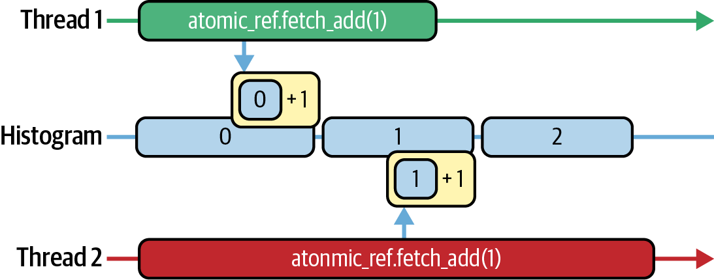
但 atomicAdd 并非没有代价。它仍有延迟，在竞争下还可能使等待同一内存地址的线程串行化，因此 L2 也需串行处理更新。这会形成热点，需要优化。Nsight Compute 可帮助量化这一成本。
在 Nsight Compute 的 Memory Workload Analysis 部分，可找到 atomic_transactions 和 atomic_transactions_per_request。原子事务计数器表示 L2 缓存原子事务总数，包括由竞争导致的任何重放；每请求原子事务指标（即竞争比）表示每条 atomicAdd 指令平均生成的 L2 事务数。
当每次 atomicAdd 恰好触发一次 L2 事务时，atomic_transactions_per_request 会接近 1.0，表示开销已接近最低。如果该比值升到 1.0 以上，说明线程正在停顿并重试原子更新，而不是执行有用工作；每次重试都表示存在竞争。
这里的优化方法是按批次获取工作，摊薄原子操作成本。不要让每个线程或 warp 都执行一次 atomicAdd，而是让一次原子操作获取一组任务。下面展示批大小为 32 时的前后对比：
// Before batchingintidx=atomicAdd(&queue_head,1);if(idx<N)process(data[idx]);// After batchingconstintbatchSize=32;intstart=atomicAdd(&queue_head,batchSize);for(inti=start;i<start+batchSize&&i<N;++i){process(data[i]);}
现在，一次原子更新就能为一个 warp（或线程块）分配一整段工作——本例中为 32 个项目——之后才再次访问计数器。每个批次仍需支付一次 L2 事务，但两次原子操作之间可以完成 32 倍的有用工作。
实践中，每个 warp 只让一个线程执行此 atomicAdd，获取下一个批次的起始索引。该线程随后将索引广播给 warp 中其他线程（例如使用 __shfl_sync），整个 warp 再并行处理这 32 个项目。这样每个 warp 只需一次原子操作，而不是每个线程一次，大幅降低竞争。
在 Nsight Compute 中，你会看到 atomic_transactions 大幅下降，transactions-per-request 重新接近 1.0。这表明你已经用持续计算替代了代价高昂的竞争。
在 L2 缓存原子操作速度极快的现代 GPU 上，得益于较高的 L2 带宽，即使批大小仅为 8 或 16，也可能消除大部分竞争。不过，仍应确认瓶颈没有被转移到其他位置。
要验证这一优化没有负面影响其他性能指标，请使用 Nsight Compute 的 Warp Stall Reasons 和 Register Pressure 报告，确保融合循环没有受寄存器溢出或共享内存银行冲突限制。
如果完成这些优化后原子操作仍是热点，可以考虑其他设计，例如每块计数器或分层归约式工作分配。
简而言之，按原子操作批量获取工作，可以让 GPU 的大量 warp 持续执行实际计算，而不是在一个跟不上处理速度的计数器前排队。
现在使用全局原子计数器协调动态工作队列。目标是使用原子计数器和 atomicAdd 在所有 SM 之间平衡任意工作负载，让线程或 warp 都尽量不空闲。动态工作队列示例见图 12-2。
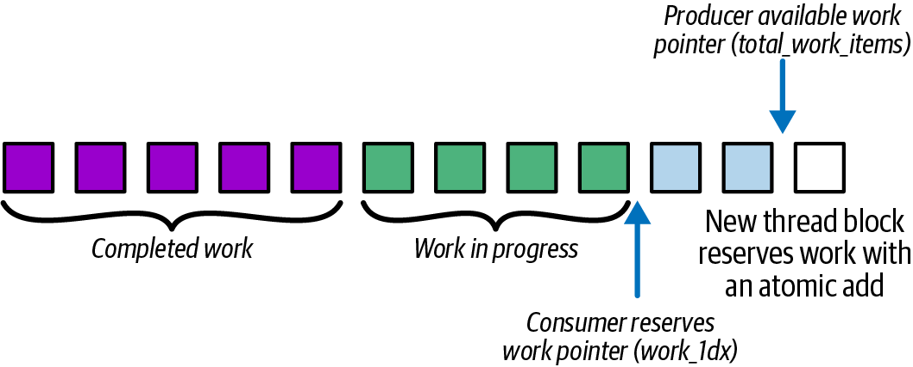
atomicAdd 作为动态工作队列，以平衡 SM 与 warp 间的工作负载在下面的代码示例（computeKernel）中，每个线程根据 idx % 256 计算不同的迭代次数。idx % 256 较小的线程只做很少工作，而该值较大的线程要做很多工作。由于这种不均衡，线程会在不同时间完成，一些 SM 只能空等最长的线程结束。下面是每个线程采用静态、不均匀工作负载的代码：
// uneven_static.cu#include<cuda_runtime.h>#include<cmath>__global__voidcomputeKernel(constfloat*input,float*output,intN){intidx=blockIdx.x*blockDim.x+threadIdx.x;if(idx<N){// Each thread does a variable amount of work based on idxintwork=idx%256;floatresult=0.0f;for(inti=0;i<work;++i){result+=sinf(input[idx])*cosf(input[idx]);}output[idx]=result;}}intmain(){constintN=1<<20;float*h_in=nullptr;float*h_out=nullptr;cudaMallocHost(&h_in,N*sizeof(float));cudaMallocHost(&h_out,N*sizeof(float));for(inti=0;i<N;++i)h_in[i]=float(i)/N;float*d_in,*d_out;cudaMalloc(&d_in,N*sizeof(float));cudaMalloc(&d_out,N*sizeof(float));cudaMemcpy(d_in,h_in,N*sizeof(float),cudaMemcpyHostToDevice);dim3block(256),grid((N+255)/256);computeKernel<<<grid,block>>>(d_in,d_out,N);cudaDeviceSynchronize();cudaMemcpy(h_out,d_out,N*sizeof(float),cudaMemcpyDeviceToHost);cudaFree(d_in);cudaFree(d_out);cudaFreeHost(h_in);cudaFreeHost(h_out);return0;}
PyTorch 没有用于 GPU 端动态工作分配的高级 API，因此需要通过自定义 CUDA 内核实现。为简洁起见，这里省略具体实现。
下面的优化版动态任务分派使用设备内存中的单个全局计数器作为 warp 级工作队列。通过批量原子操作，我们把它变成持久化的 warp 级工作队列。这样，提前完成的 warp 会立即获取下一批工作，而不是进入空闲状态：
// uneven_dynamic.cu#include<cuda_runtime.h>__device__unsignedintglobalIndex=0;// Warp-batched dynamic queue: 1 atomic per active warp__global__voidcomputeKernelDynamicBatch(constfloat*input,float*output,intN){// lane id in [0,31]intlane=threadIdx.x&(warpSize-1);while(true){// Elect an active leader each iteration (handles divergence safely)unsignedmask=__activemask();intleader=__ffs(mask)-1;// Warp leader atomically grabs a contiguous batch for the whole warpunsignedintbase=0;if(lane==leader){base=atomicAdd(&globalIndex,warpSize);}// Broadcast starting index to all active lanes in the warpbase=__shfl_sync(mask,base,leader);unsignedintidx=base+lane;if(idx>=(unsigned)N)break;// dynamic termination// Hoist invariants out of the variable trip-count loop// Note: You can also use __sincosf on Blackwellfloats=sinf(input[idx]);floatc=cosf(input[idx]);intwork=idx%256;floatresult=0.0f;#pragma unroll 1for(inti=0;i<work;++i){result+=s*c;}output[idx]=result;// loop continues until counter >= N}}intmain(){constintN=1<<20;float*d_in,*d_out;cudaMalloc(&d_in,N*sizeof(float));cudaMalloc(&d_out,N*sizeof(float));// Host buffers (pinned) for a realistic data pathfloat*h_in=nullptr,*h_out=nullptr;cudaMallocHost(&h_in,N*sizeof(float));cudaMallocHost(&h_out,N*sizeof(float));for(inti=0;i<N;++i){h_in[i]=static_cast<float>(i%1000);}// Copy inputs to devicecudaMemcpy(d_in,h_in,N*sizeof(float),cudaMemcpyHostToDevice);// Reset global counterunsignedintzero=0;// If you call this kernel repeatedly (e.g., in a loop),// reset 'globalIndex' to 0 before each launch.cudaMemcpyToSymbol(globalIndex,&zero,sizeof(unsignedint));// Launch with 256 threads per blockdim3block(256),grid((N+255)/256);cudaStream_tstream;cudaStreamCreateWithFlags(&stream,cudaStreamNonBlocking);computeKernelDynamicBatch<<<grid,block,0,stream>>>(d_in,d_out,N);cudaStreamSynchronize(stream);cudaStreamDestroy(stream);cudaDeviceSynchronize();// Copy results back and clean upcudaMemcpy(h_out,d_out,N*sizeof(float),cudaMemcpyDeviceToHost);cudaFree(d_in);cudaFree(d_out);cudaFreeHost(h_in);cudaFreeHost(h_out);return0;}
每个 warp 都从全局队列以原子方式领取大小为 warpSize（32 个线程）的下一批任务，并在循环中处理。这可以让 SM 尽量保持工作。该代码使用单个全局原子工作队列实现动态工作分配。
这里，每个 warp 会反复从全局计数器获取下一批的基准索引。每个 warp 的第一个线程（if (lane==0)，称为 warp leader）使用 base=atomicAdd(&globalIndex, warpSize) 执行原子加法，获得这个连续块的起始索引。随后，它使用 __shfl_sync(__activemask(), base, 0) 将基准索引广播给 warp 中其他线程。
换言之，不再让每个线程绑定固定元素索引，而是让每个 warp 从共享计数器获取连续的一段任务，然后使用 idx = base + lane 执行计算。
该 warp 中的所有线程都对动态获取的索引执行相同的 sin/cos 循环。因此，工作不再预先分配给线程，而是通过全局原子队列在运行时拉取并平衡。
请注意，当没有更多工作时，if (idx >= N) 边界检查会使 warp 退出，从而避免越界内存访问。除此之外，warp 中每个线程执行的 sin/cos 循环与静态版本完全相同。
在一个简单微基准中，取 N = 1 << 20、work = idx % 256 时，静态分配内核耗时约 200 ms，而动态队列版本约 100 ms。这 2 倍加速来自消除 SM 空闲时间和减少原子竞争。Nsight Compute 将 active SM cycles 定义为至少有一个活跃 warp 的耗时周期占比。
加速幅度会随工作不均衡程度变化；但只要性能分析显示 warp 空闲停顿、实际 occupancy 较低，或每项任务运行时间不均导致时间线出现明显间隙，就值得探索动态工作分配。在这些场景中，尤其是存在中等程度不均衡时，通常可能获得 10%–20% 的加速。
简言之，动态工作分配能确保接近均匀的 SM 利用率，因为每个 warp 都会持续获取和处理新任务，直至计数器超过 N。这与许多 warp 远早于最慢 warp 完成、从而让硬件资源闲置的情形形成对比。
当流水线包含多个内核、拷贝、stream 事件记录和回调时，每次迭代都在主机上逐个启动它们，仍会产生 CPU 开销。CUDA Graph 允许你一次捕获整个工作流，并以近乎零的 CPU 开销反复重放。图 12-3比较了不使用（上）和使用（下）CUDA Graph 时的内核启动。
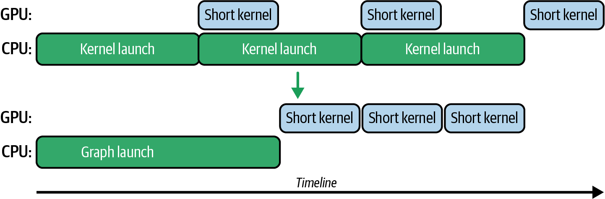
为什么使用 CUDA Graph？首先，它能降低启动开销，多个小内核或拷贝基本可以通过一次 CPU 调用启动。其次，它能改善 GPU 上的调度：工作以批次提交，CUDA 驱动有机会减少操作之间的一些内部延迟。
此外，CUDA Graph 的依赖关系预先已知，因此不需要 CPU 在操作之间频繁同步。在内存传输场景中，CUDA Graph 可以正确地将异步拷贝与内核执行关联为依赖，而无需手动同步。它并不会天然比普通 stream 更好地重叠拷贝和内核，但能简化执行流程。
PyTorch 等 AI 框架会在底层为深度学习模型中形状固定的部分利用CUDA Graph。具体来说，PyTorch 支持使用 torch.cuda.Graph 上下文捕获一系列操作，并持续优化内部实现，以便对可预测的代码段使用 CUDA Graph。
高性能推理引擎（如 vLLM 和 NVIDIA TensorRT-LLM）也可以利用 CUDA Graph，将模型执行捕获为针对不同序列长度范围和输入 batch 大小的一组预定义 graph。启用 graph 捕获后，这些系统通常会对输入分桶或填充，使其匹配受支持的 graph batch 大小，从而以固定形状重放捕获的 graph。这可以显著降低大规模生产推理工作负载的延迟。
例如，可以在启动或加载模型时为每个 batch 大小捕获一个 CUDA Graph；运行时，再启动与传入请求 batch 大小匹配的预捕获 graph。
使用 CUDA Graph 时，一个重要问题是内存管理。CUDA Graph 内的内存操作遵循与 CUDA stream 相同的规则。如果在捕获期间分配 GPU 内存，该分配就会成为 graph 执行的一部分。
通常应避免在图内部进行 GPU 内存分配，而是在图外预先分配内存。如图 12-4所示，PyTorch 等许多框架会将静态内存池与 CUDA Graphs 结合使用。静态内存池可防止内存分配成为被捕获图序列的一部分。
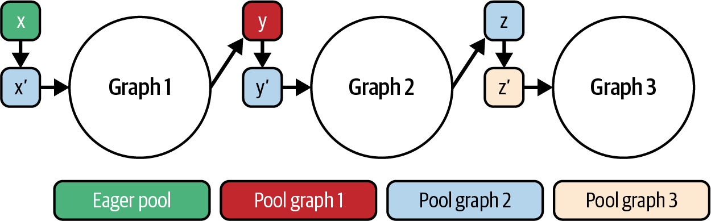
CUDA Graphs 不会让单次内存复制或内核执行本身更快，但它们可像 CUDA 流一样，自动重叠图中相互独立的数据传输和计算。由于依赖图预先已知，这消除了每次迭代中的 CPU 调度。
要捕获 graph，需要在 stream 上调用 cudaStreamBeginCapture()，将所有内存传输（cudaMemcpyAsync()）、内核启动、事件（cudaEventRecord()）和回调（cudaLaunchHostFunc()）入队，然后调用 cudaStreamEndCapture() 创建 CUDA Graph 定义（cudaGraph_t）。
随后，CUDA 驱动可以在每次迭代中使用 cudaGraphLaunch() 启动 CUDA Graph。由于驱动预先知道完整依赖图，因此可以直接在 GPU 上重放预构建的 stream 序列，启动开销很小。
下一节将讨论的 cudaGraphExecUpdate 允许在迭代之间大小、维度或指针发生变化时，对已捕获 graph 做有限修改。如果输入大小变化，只需更新 graph 节点参数，而不必为每种新输入大小重新捕获完整 graph。
即使流水线只有部分操作是重复的，CUDA Graph 也可以只捕获这一部分。例如，如果总是执行一次主机 → 设备拷贝、两个内核、再执行一次设备 → 主机拷贝，就可以只捕获该子图，并通过一次函数调用重放。
要重放 CUDA Graph，只需提供 stream 句柄，GPU 就能执行操作序列，无需额外 CPU 指令。这与内核间并发直接相关：CUDA Graph 可以混合异步拷贝、细粒度事件屏障和内核，保持复杂的重叠行为，同时完全消除 CPU 瓶颈。
通常应先进行一次重放试运行以确保正确性。创建可执行 graph cudaGraphExec_t 来实例化 graph，然后通过一次 graph 重放调用启动它。启动捕获的 graph 后，runtime 会按正确顺序在 GPU 上执行所有操作。
为了展示 CUDA Graph 的用法，考虑一个简单的内核序列。下面分别给出 C++ 和 PyTorch 中捕获并启动 CUDA Graph 的代码片段：
cudaStream_tstream;cudaStreamCreateWithFlags(&stream,cudaStreamNonBlocking);cudaGraph_tgraph;cudaGraphExec_tinstance;cudaStreamBeginCapture(stream,cudaStreamCaptureModeGlobal);// Enqueue operations on 'stream' as usualkernelA<<<grid,block,0,stream>>>(d_X);kernelB<<<grid,block,0,stream>>>(d_Y);kernelC<<<grid,block,0,stream>>>(d_Z);cudaStreamEndCapture(stream,&graph);cudaGraphInstantiate(&instance,graph,nullptr,nullptr,0);// Now 'instance' can be launched in a loopfor(intiter=0;iter<100;++iter){cudaGraphLaunch(instance,stream);// No per-kernel sync needed; graph ensures dependencies}cudaStreamSynchronize(stream);// (Destroy graph and instance when done)cudaGraphExecDestroy(instance);cudaGraphDestroy(graph);
在这段伪代码中，我们先在 CUDA stream 上开始捕获，按顺序在该 stream 中启动三个内核（A、B 和 C），结束捕获后得到一个 graph，然后实例化该 graph。
现在可以根据需要多次调用 cudaGraphLaunch(instance, stream)，重放完整的 A → B → C 序列。每次迭代只需支付一次启动成本，而不是三次独立启动。GPU 会按照记录顺序执行 A、B 和 C，在本例中即连续执行。循环结束后再同步，以确保所有迭代完成。
如前所述，PyTorch 等高级 AI 框架支持 CUDA Graph。PyTorch 让 Python 开发者无需深入了解 CUDA C++，也能获得接近原生 CUDA 的性能。下面使用 PyTorch 的 torch.cuda.Graph 上下文管理器捕获并重放操作：
importtorch,timeX=torch.randn(1<<20,device='cuda')# Define operations for referencedefopA(x):returnx*1.1defopB(x):returnx+2.0defopC(x):returnx.sqrt()# Persistent buffers for pointer stabilitystatic_x=torch.empty_like(X)static_y=torch.empty_like(X)static_z=torch.empty_like(X)static_w=torch.empty_like(X)# Warm up once to initialize CUDA kernels and caches_=opC(opB(opA(X)))torch.cuda.synchronize()# Seed the static input before capturestatic_x.copy_(X)# Capture the graphg=torch.cuda.CUDAGraph()stream=torch.cuda.Stream()torch.cuda.synchronize()withtorch.cuda.graph(g,stream=stream):# Record A then B then C using out parameters to avoid allocationstorch.mul(static_x,1.1,out=static_y)torch.add(static_y,2.0,out=static_z)torch.sqrt(static_z,out=static_w)# Replay the captured graph 100 timesforiinrange(100):# If inputs change, copy new values into static_x before replay# static_x.copy_(new_X)g.replay()
在生产环境中，应分配持久的输入和输出缓冲区，使捕获的内核看到固定内存地址。例如，在捕获前创建 static_y = torch.empty_like(X)，然后在 graph 内使用 static_y.copy_(opA(X))。这样可以避免捕获期间分配内存，并满足 CUDA Graph 对指针稳定性的要求。PyTorch CUDA Graph 要求重放时捕获张量使用相同的内存地址。
在这个 PyTorch 示例中，我们定义了 opA、opB 和 opC 操作；实践中，它们可以是神经网络层或任意 GPU 操作。先运行一次预热 opC(opB(opA(X)))，确保所有内核、内存分配和库上下文（例如 cuBLAS/cuDNN）预先初始化。这是必要的，因为 CUDA Graph 捕获不会记录这些延迟初始化步骤。
跳过预热可能导致 graph 捕获失败，或在发生延迟初始化时引入意外停顿。
我们先运行一次序列预热 GPU，以初始化所有内核和库。然后在新的 CUDA stream 上，将前向（A）、变换（B）和反向（C）操作放入 with torch.cuda.graph(g, stream=stream): Python 上下文管理器块，从而捕获到单个 torch.cuda.CUDAGraph 中。捕获后，调用 g.replay() 100 次，每次迭代只需一次主机调用即可启动完整的 A → B → C 流水线。结果汇总于表 12-1。
| 指标 | 使用 CUDA Graph 前 | 使用 CUDA Graph 后 |
|---|---|---|
| 每 100 次迭代的 CPU 启动调用 | 300 次独立内核启动 | 100 次图重放（每次迭代 1 次） |
| 主机同步调用 | 300 次 cudaDeviceSynchronize 调用 |
0 |
| 内核之间的平均 GPU 空闲时间 | 每次迭代约 3 µs 间隙 | 0 µs（连续背靠背执行） |
| 端到端迭代延迟 | ~1.00 ms | 约 0.75 ms（快 25%） |
注意：所有指标表中的数值仅用于说明概念。不同 GPU 架构的实际基准测试结果请参阅 GitHub 仓库。
这里可以看到，CUDA Graph 消除了每次迭代的 CPU 调度和主机—设备握手。这是因为每次迭代的 GPU 工作被批量放入一次 g.replay() 调用，而不是三次独立的内核启动。因此，迭代速度提高了 25%；CPU 只需发出轻量级重放命令，并与 GPU 保持完全异步。
使用 CUDA Graph 时存在一些常见陷阱，需要妥善处理。例如，如果工作负载大小发生变化，已捕获的 graph 可能不再有效，需要重新捕获或调用下一节介绍的 cudaGraphExecUpdate。
某些 CUDA API 调用（例如内存分配以及主机—设备同步原语）通常不应包含在 graph 捕获中。尽管现代 CUDA Graph 支持在已捕获 graph 内执行有限的内存管理操作，但仍建议在捕获前完成所有内存分配，并确保 graph 使用的数据始终位于相同内存地址。
graph 执行期间必须保持内存地址不变，这是 PyTorch 等框架将静态内存池与 CUDA Graph 一起使用的主要原因。例如，PyTorch 提供 torch.cuda.graph_pool_handle() API，为指针稳定的 CUDA Graph 捕获创建专用内存池。使用独立分配器池可以确保张量地址在捕获和重放期间保持固定，满足指针稳定性要求。迭代之间应将输入拷贝到静态张量中更新，不要每次迭代重新分配张量。
还应避免在 CUDA Graph 捕获中包含主机端回调或不受支持的操作，包括 print()、随机数生成器（RNG）调用、嵌套捕获和新的内存分配。这是因为 graph 必须记录纯粹且确定性的 GPU 工作序列。
此外，捕获中使用的所有张量必须已在固定地址上分配且形状固定。在捕获期间调整大小或调用 cudaMalloc 都会破坏图。
记录 CUDA Graph 后，并不需要仅因某些启动参数改变就丢弃它。无需重新捕获，而是调用图更新 API，直接在现有图中更新网格/块维度、指针地址或内核参数。图更新 API 包括 cudaGraphExecUpdate 和更底层的 cudaGraphExecKernelNodeSetParams。
cudaGraphExecUpdate 允许将一个内核节点替换为形状相同的新节点。例如，可以换入不同的融合内核实现，只要形状相同即可。CUDA runtime 会验证这些修改，并允许立即重放修改后的 graph，从而避免完整捕获的成本。
截至本书撰写时，不能任意添加或删除节点。如果更新超出既有 graph 所能处理的范围，运行时会返回错误；此时必须重新捕获一个 graph。
例如，考虑前文使用最大 batch 大小的三内核 A → B → C graph。在每次推理循环中，只需更新内核 B 的启动维度以匹配当前 batch，然后重放同一个 graph。对于整体流水线固定但少数参数可能变化的半静态工作负载，这能降低开销。
实践中，典型工作流分三步。首先使用预期最大尺寸（例如最大 batch）捕获模板 graph，比如最大 batch 大小为 128。之后如果收到 batch 大小为 64 的请求，就调用 cudaGraphExecUpdate 将启动参数调整为 64，并可将内存指针更新为更小的缓冲区。
使用 cudaGraphExecUpdate 后，即使内核参数、grid/block 维度或内存地址发生变化，也无需重建 graph。更新只需几微秒，因此仍可保持 CUDA Graph 重放低于 100 µs 的快速启动开销，同时保留运行时调整关键参数的灵活性。注意，不兼容的修改会返回错误状态，并要求重新捕获。
例如，若确实需要改变图结构来指定不同数量的内核，可退回到“重新捕获再更新”的工作流。此时，用 cudaStreamBeginCapture 和 cudaStreamEndCapture 包裹代码的一次迭代以构建新图；随后运行中的微小调整再使用较轻量的 cudaGraphExecUpdate。
实际上，动态 graph 更新可以让你完全在 GPU 上创建“参数化”或条件执行路径。当 GPU 工作循环频率很高、但只有少数参数（例如 batch 大小）变化时，可以一次捕获、快速更新，同时获得较低 CPU 开销和工作负载所需的适应性。
现在你已经了解如何低开销地从 CPU 启动并调整已捕获流水线，下一步就是完全移除 CPU 的启动决策。借助设备发起的 CUDA Graph 启动，正在运行的 GPU 内核可以直接在设备上触发预先记录的 graph，完全绕过主机。
要启用设备端启动，先像往常一样在主机上捕获 graph。然后使用 cudaGraphInstantiate 实例化，并传入 cudaGraphInstantiateFlagDeviceLaunch。实例化后，在任何设备端启动之前，先在主机 stream 上使用 cudaGraphUpload 上传可执行 graph。
随后使用 cudaGraphUpload 将 graph 上传到 GPU 内存；必须在 GPU 启动 graph 之前完成。（未上传 graph 就尝试设备端启动会导致错误。）
实践中，可以在持久内核或动态内核中嵌入“graph launch”节点，或调用设备端 graph API。条件满足时，GPU 会在自己拥有的 stream 上启动整个 graph，如图 12-5所示。
设备发起的 graph 启动让数据驱动工作流完全留在 GPU 上。由内核而不是 CPU 计算决策条件，因此可以直接启动下一个 graph，消除 CPU 往返并进一步降低延迟。
由于 graph 已驻留在 GPU 上且不需要 CPU-GPU 握手，设备发起启动可以将主机调度移出关键路径，降低受主机限制的循环的端到端延迟。实践中，设备发起的 CUDA Graph 启动相较等价的主机端 graph 启动，启动延迟曾显示出约 2 倍的降低；即使 graph 规模或复杂度增加，开销也基本保持不变。
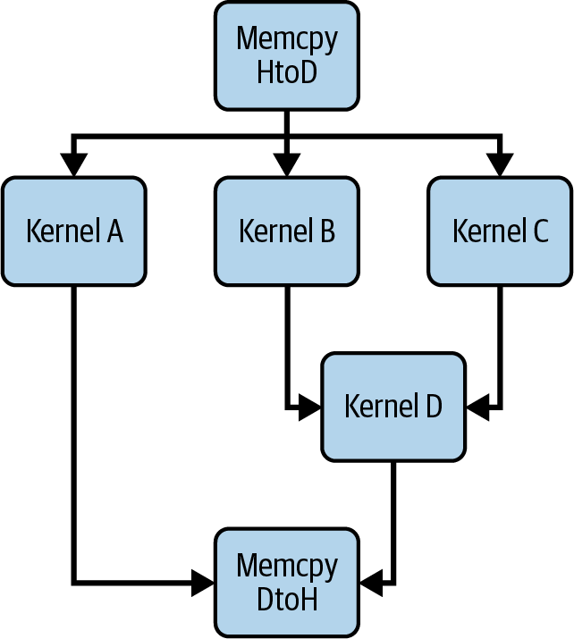
设备启动 graph 的延迟不受 graph 中节点数或并行分支数影响；相比之下，主机启动 graph 的延迟会因 graph 变大而受到 CPU 调度开销影响并增加。
此外，设备启动可以很好地随 graph 宽度扩展。增加更多并行节点时，主机端启动会产生额外同步成本，而设备启动延迟仍近似保持平坦。
调试设备启动的 graph 可能比较棘手，但 Nsight Systems 等工具会在 GPU 时间线上将子 graph 显示为独立的工作 stream。建议在父内核中 cudaGraphLaunch 调用前后使用 NVTX 标记，标出设备启动发生的位置，以便验证 graph 是否按照相对于父线程的预期运行。
在设备代码中，可以使用简单 API cudaGraphLaunch(graphExec, stream) 启动 graph。runtime 使用特殊的保留 cudaStream_t 值区分以下启动模式：“fire-and-forget”（cudaStreamGraphFireAndForget）、“tail”（cudaStreamGraphTailLaunch）和“sibling”（cudaStreamGraphFireAndForgetAsSibling）。这些模式会自动在 CUDA stream 中强制执行正确顺序，无需主机介入。
在 fire-and-forget 启动中，子 graph 会立即开始执行，并与发起它的父内核并发运行。父内核不会等待子 graph 完成，类似于启动一条独立工作线程。fire-and-forget 适合从内核内部生成异步任务。
一个 graph 在执行期间最多可以包含 120 个 fire-and-forget graph。
相比之下，设备发起的 graph tail 启动会推迟 graph 执行，直到发起内核到达同步点或完成。它实际上将 graph 作为延续排队到当前内核之后运行，如图 12-6所示。
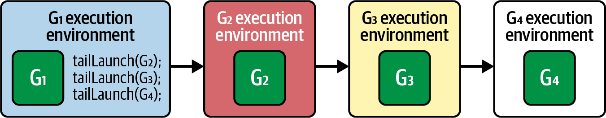
tail 启动对于实现驻留 GPU 的工作调度器尤其有用。持久“scheduler”内核可以 tail 启动一个 graph，待该 graph 完成后再重新启动自身。这种技术无需主机再次调用，就能在 GPU 上形成循环。内核调用 cudaGetCurrentGraphExec() 获取自身正在执行的 graph 句柄，然后使用 cudaGraphLaunch(..., cudaStreamGraphTailLaunch) 再次将自身入队。
此外，tail graph 还可以执行额外的 tail 启动。在这种情况下，新的 tail 启动会先于之前 graph 的 tail 启动执行，如图 12-7所示。
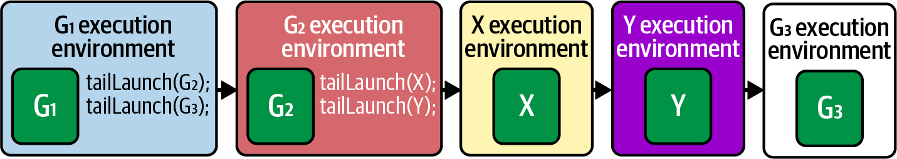
一个 CUDA Graph 中最多可以排队 255 个待处理 tail 启动。不过，对于 self-tail-launch（例如 graph 将自身重新入队），同一时间最多只能有一个待处理的 self-tail-launch。
sibling 启动是 fire-and-forget 的一种变体：被启动的 graph 作为父 graph 的同级执行，而不是子 graph；同时，sibling 运行在父 graph 的 stream 环境中。这意味着它会立即独立运行，但不会延迟父 graph 的任何 tail 启动，如图 12-8所示。
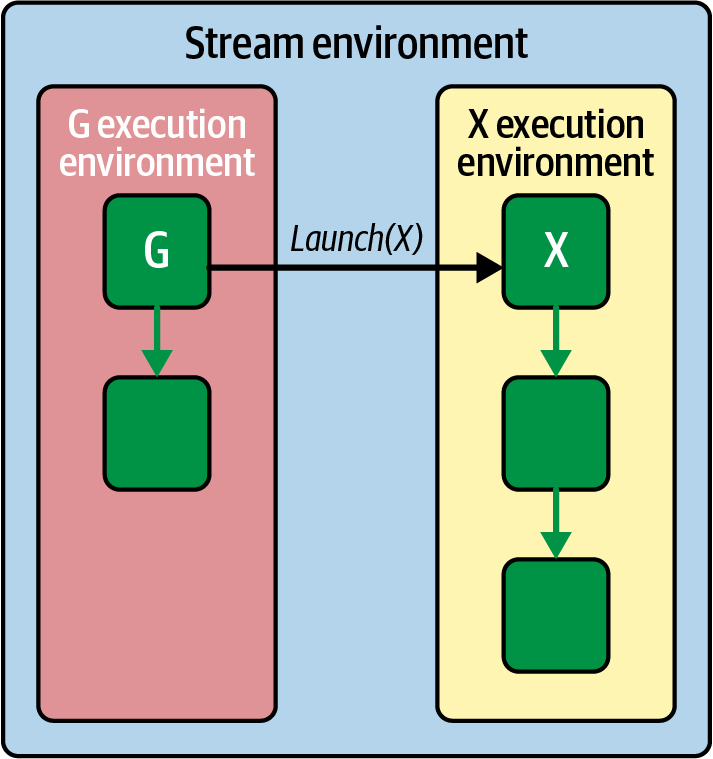
对于此模式，可以使用 cudaGraphLaunch(graphExec, cudaStreamGraphFireAndForgetAsSibling) 以“sibling 模式”启动，将 graph 作为当前 graph 执行环境的同级提交。
使用设备发起 CUDA Graph 时，需要仔细管理依赖。例如，如果被启动内核必须使用 graph 的结果，适合采用 tail 启动，因为父内核会暂停，直到 graph 工作完成。相反，如果被启动 graph 只是辅助任务，fire-and-forget 模式可以让父内核无需等待即可继续。
实践中，设备发起的 CUDA Graph 开启了新的模式。例如，设想一个 GPU 压缩流水线：内核必须根据数据内容在不同压缩算法之间做选择。GPU 内核无需结束并通知 CPU 启动选定的压缩内核，而是可以直接启动与“LZ 压缩”或“Huffman 压缩”对应的预记录 graph。
在此压缩示例中，GPU 不会空闲等待 CPU 作出决定。接下来看看另一种有用模式：它在持久化内核内部，将原子队列/计数器与设备发起、尾部启动的 CUDA Graphs 结合，用于 LLM 推理调度。
我们可将前面的原子计数器工作队列与设备发起的图尾部启动结合。设想一个 LLM 推理循环用例：它通过捕获包含 Transformer 块前向传播（注意力 + 前馈）的图，使用 CUDA Graph 执行解码。
轻量级持久 scheduler 内核可以使用 atomicAdd(&queueHead,1) 获取下一个工作项。随后，它 tail 启动预捕获的 decode CUDA Graph 来计算输出，并立即循环回队列获取下一项。
每个 CUDA Graph 完成后，内核内 scheduler 循环使用 atomicAdd(&queueHead,1) 获取下一个索引，并 tail 启动另一个 decode graph。这实际上创建了完全驻留 GPU 的调度器，无需接触 CPU 就能决定并执行任务。
通过串联这些 tail 启动，每个 token 都能从头到尾在设备上处理，CPU 开销几乎为零。由于 CPU 不再进入关键路径，SM 可以保持较高利用率，单 token 延迟降低，并能动态适应不同序列长度和 batch 大小；只需更新 graph 参数或切换预记录 graph 即可。
在传统 CUDA Graph 中，每个节点及其依赖都在捕获时固定，因此任何决策逻辑都必须回到主机。条件 graph 节点打破了这种刚性：它根据与节点关联的小型“条件句柄”，将分支决策推迟到 GPU 自身执行。
graph 执行时，GPU 会计算该句柄，并选择性地运行某个主体子图（或循环执行它），全程无需将控制权交回 CPU。具体而言，条件 graph 节点允许把 IF、IF/ELSE、WHILE、SWITCH 控制流直接嵌入 CUDA Graph，在 GPU 设备上运行。条件节点可以消除主机往返，并可能在现代 GPU 上带来显著性能收益。
本质上，条件 graph 节点允许根据设备内核计算的值控制 graph 执行，而无需 CPU 介入。这使复杂分支工作流可以实现为一次可重复的 graph 启动。CUDA Graph 支持多种条件节点，如图 12-9所示：
条件非零时，将单个主体 graph 执行一次。
指定两个主体 graph；条件为真时选择一个，为假时选择另一个。
只要条件保持非零，就反复执行主体 graph，并在每次迭代后重新检查。
保存 N 个主体 graph；当条件等于 i 时执行第 i 个；若条件 ≥ N，则完全跳过执行。
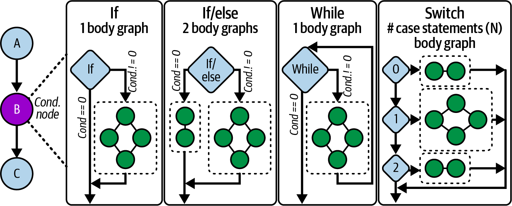
下面的示例展示如何创建并填充 IF 条件节点。注意使用 cudaGraphSetConditional 写入控制 IF 节点的标志。本例中的条件检查总和是否大于给定阈值；如果数据满足条件（flag = 1u），就运行下一个子图，否则条件节点不运行该子图：
#include<cuda_runtime.h>#include<cstdio>// Device kernel that computes and sets the condition handle__global__voidsetHandle(cudaGraphConditionalHandlehandle,int*data,size_tN){// Example thresholdconstexprintthreshold=123456;// Test whether the sum of data exceeds a threshold// using a custom reduce_sum() function// (recommended to implement this with// CUB's DeviceReduce::Sum routine.)unsignedintflag=(reduce_sum(data,N)>threshold)?1u:0u;cudaGraphSetConditional(handle,flag);}// A simple body kernel that runs only if flag != 0__global__voidbodyKernel(){printf("Conditional body executed on GPU!\n");}intmain(){cudaStream_tstream;cudaStreamCreateWithFlags(&stream,cudaStreamNonBlocking);// 1) Create the graphcudaGraph_tgraph;cudaGraphCreate(&graph,0);// 2) Create a condition handle associated with graphcudaGraphConditionalHandlecondHandle;cudaGraphConditionalHandleCreate(&condHandle,graph);// 3) Add the upstream kernel node to set the handlecudaGraphNode_tsetNode;cudaKernelNodeParamssetParams={};setParams.func=(void*)setHandle;setParams.gridDim=dim3(1);setParams.blockDim=dim3(32);// 4) Allocate input dataconstexprsize_tN=1<<20;int*d_data=nullptr;cudaMalloc(&d_data,N*sizeof(int));void*setArgs[]={&condHandle,&d_data,&N};setParams.kernelParams=setArgs;cudaGraphAddKernelNode(&setNode,graph,nullptr,0,&setParams);// 5) Add the IF conditional nodecudaGraphNode_tcondNode;cudaConditionalNodeParamsifParams={};ifParams.handle=condHandle;ifParams.type=cudaGraphCondTypeIf;// One-node body graph, in this caseifParams.size=1;cudaGraphAddConditionalNode(&condNode,graph,&setNode,1,&ifParams);// 6) Populate the body graph: one kernel that prints a messagecudaGraph_tbodyGraph=ifParams.phGraphOut[0];cudaGraphNode_tbodyNode;cudaKernelNodeParamsbodyParams={};bodyParams.func=(void*)bodyKernel;bodyParams.gridDim=dim3(1);bodyParams.blockDim=dim3(32);cudaGraphAddKernelNode(&bodyNode,bodyGraph,nullptr,0,&bodyParams);// 7) Instantiate, upload, and launch the graph on the devicecudaGraphExec_tgraphExec;cudaGraphInstantiate(&graphExec,graph,nullptr,nullptr,cudaGraphInstantiateFlagDeviceLaunch);cudaGraphUpload(graphExec,stream);cudaGraphLaunch(graphExec,stream);// 8) Wait for completion and clean upcudaStreamSynchronize(stream);cudaGraphExecDestroy(graphExec);cudaGraphDestroy(graph);cudaStreamDestroy(stream);cudaFree(d_data);return0;}
这里使用 cudaGraphCreate 创建新的 CUDA Graph，用来容纳之后的所有节点。随后使用 cudaGraphConditionalHandleCreate 创建条件句柄。（它将一个可在设备上设置的小整数值与 graph 关联起来。）
随后添加上游内核 setHandle。该内核只在一个线程上运行，以避免竞态条件，然后调用 cudaGraphSetConditional 写入控制 IF 节点的标志。
使用 cudaGraphAddConditionalNode 添加 IF 条件节点，并指定 cudaGraphCondTypeIf 和 size=1。这定义了计划支持的条件分支或迭代数量。
这里分配一个空子图（body），当条件标志返回非零时执行。从 ifParams.phGraphOut[0] 取得主体 graph，并添加 bodyKernel 来填充它；该内核执行时只打印一条消息。
构建 graph 后，调用 cudaGraphInstantiate 生成可执行 graph 对象。若要从设备代码启动 graph，必须使用 cudaGraphInstantiateFlagDeviceLaunch 标志实例化，并在任何设备端启动之前通过 cudaGraphUpload 上传。
在 CUDA stream 上使用 cudaGraphLaunch 启动后，会依次触发上游 set-handle 内核、条件检查，并在标志已设置时执行主体内核。所有这些都直接发生在 GPU 上，如图 12-10所示。
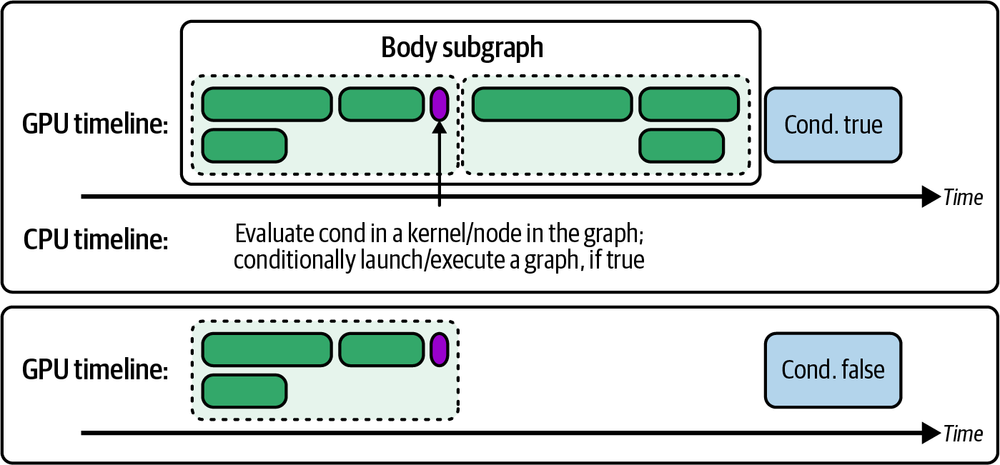
body 子图）随后使用 cudaStreamSynchronize 同步 stream 并等待完成。最后销毁实例化 graph、graph 本身和 stream，完成清理。
为尽量避免竞态条件，应始终只在一个线程中设置条件（例如 if (threadIdx.x == 0)），并确保前序内核刷新内存，使该值在条件节点执行前可见。
条件节点也可以嵌套。例如，WHILE 节点的主体可以包含 IF 节点，如图 12-11所示。这样可以实现多级决策逻辑，而无需往返 CPU。
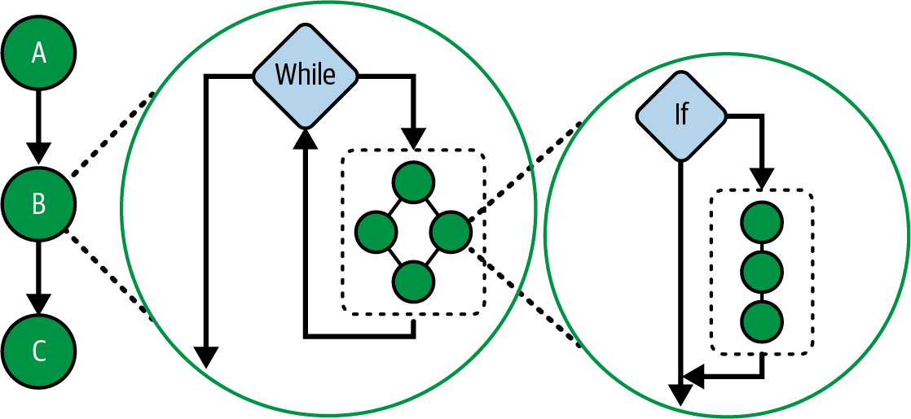
简而言之，应使用条件 graph 节点将决策留在 GPU 上，降低 CPU 开销，并直接在 CUDA Graph 中表达复杂控制流。由于 graph 创建成本可以摊薄到多次迭代中，将动态工作流完全放在设备端可能带来显著性能改善。
前面介绍了设备发起的 CUDA Graph 启动如何在极少 CPU 参与的情况下捕获并重放固定操作序列。但该模型要求预先知道完整执行流，而这并不总是可能。许多工作负载会根据输入数据、中间结果或问题复杂度在运行时改变形状，这正是动态并行（DP）的用武之地。
DP 让 GPU 内核能够自行生成新工作，而不必等待 CPU。CUDA Graph 要求预先知道完整流水线，而 DP 允许正在运行的“父”内核检查自己的输出，并即时决定接下来启动多少个“子”内核。对于分层归约、自适应网格细化和图遍历等真正不规则的问题，这一点尤为重要，因为只有在处理数据的过程中，后续任务数量才会逐渐明确。
设想一个推理流水线：某些输入偶尔需要特殊的“插件”模型评估。在 CPU 驱动流程中，需要运行 Kernel A，将结果拷回主机，决定是否启动 Kernel B，再发出启动；GPU 在这次往返期间会空闲。使用 DP 后，Kernel A 检查自己的输出，并在条件成立时直接在设备上启动 Kernel B。整个决策与分发都发生在一个驻留 GPU 的工作负载内部，从而缩短空闲间隙，让 SM 保持忙碌。
在 LLM 中，大多数 token 遵循标准 Transformer 路径，但少数 token 需要辅助 attention block。启用 DP 的 Transformer 内核可以在运行时识别这些特殊 token，只为相应位置启动额外 attention 内核，无需主机干预。NVIDIA 库已在自适应算法的类似模式中利用 DP：数据流经计算过程时动态产生新子任务。
如果性能分析时间线出现 Kernel A → GPU 空闲间隙 → Kernel B 的连续模式，而空闲时间对应 CPU 准备下一次启动，那么 DP 可能适用。用设备端启动替代该间隙，有助于让 SM 保持工作并显著降低依赖阶段之间的延迟。
当然，DP 的性能收益并非没有代价。每次子内核启动都会使用 GPU 调度资源，并需要额外栈空间。为避免“stack overflow”错误，可能需要使用 cudaDeviceSetLimit(cudaLimitStackSize, newSize) 增大 runtime 栈大小。达到默认限制时，CUDA 会发出警告。
与此相关，CUDA 对待处理的子内核启动数量设有最大限制。默认情况下，同一时间允许 2,048 个未完成的设备启动，但该值可以配置。
如果父内核通过大型循环启动数千个微小内核，需要生成超过 2,048 个子内核，可以使用 cudaDeviceSetLimit(cudaLimitDevRuntimePendingLaunchCount, newLimit) 提高限制。否则，超过默认的 2,048 限制会导致 runtime 错误。实践中，默认值通常足以满足大多数用途，但极端场景必须考虑这一限制。
由于 DP 会增加一些指令级开销，最好只在持久内核、stream 或 CUDA Graph 等静态编排会让 GPU 在 CPU 决定下一步时空闲的场景中使用。换言之，如果工作负载确实是固定操作序列，通常更适合将其捕获为 CUDA Graph，并在设备端重放。
当工作由数据本身动态产生时，DP 可以让调度和执行全部留在 GPU 上，为嵌套、数据依赖或不可预测的并行任务带来更好的扩展性和更低的端到端延迟。
由于 DP 每次启动都有开销，并会占用待处理启动槽位，因此应在新并行性于运行时从数据中产生、且无法表达为预记录 CUDA Graph 时使用 DP。相反，如果控制流可表达且会重复执行，应优先采用设备启动的 CUDA Graph，因为它能摊薄成本。
下面比较一个简单父子工作流的两种实现。主机驱动版本先启动父内核并等待其完成，然后由 CPU 发出两个子内核启动；GPU 会在这些决策间隙中空闲：
// dp_host_launched.cu#include<cuda_runtime.h>__global__voidchildKernel(float*data,intN){intidx=blockIdx.x*blockDim.x+threadIdx.x;if(idx<N){data[idx]=data[idx]*data[idx];}}__global__voidparentKernel(float*data,intN){// Parent does setup work. Here, CPU decides on child launches.if(threadIdx.x==0&&blockIdx.x==0){// maybe mark regions or compute flags here}}intmain(){constintN=1<<20;float*d_data;cudaMalloc(&d_data,N*sizeof(float));// ... initialize d_data ...// 1) Launch parent and waitcudaStream_ts;cudaStreamCreateWithFlags(&s,cudaStreamNonBlocking);parentKernel<<<1,1,0,s>>>(d_data,N);cudaStreamSynchronize(s);// 2) CPU splits work in half and launches childreninthalf=N/2;childKernel<<<(half+255)/256,256>>>(d_data,half);childKernel<<<(half+255)/256,256>>>(d_data+half,half);cudaStreamSynchronize(s);cudaStreamDestroy(s);cudaFree(d_data);return0;}
在主机驱动版本中，GPU 运行 parentKernel 后进入空闲，而 CPU 依次准备并启动各个 childKernel。注意父内核之后和子内核之间显式调用的 cudaDeviceSynchronize()；这些调用会造成应当消除的空闲间隙，如图 12-12所示。
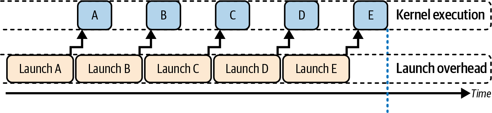
相比之下，设备启动的 DP 版本允许父内核在设备上生成子内核。父子内核启动之间不需要主机同步；父内核发出的子内核启动会隐式地将子内核排队，只在最后同步，如以下代码所示：
// dp_device_launched.cu// Dynamic parallelism requires relocatable device code enabled with -rdc=true.#include<cuda_runtime.h>__global__voidchildKernel(float*data,intn){intidx=blockIdx.x*blockDim.x+threadIdx.x;if(idx<n){data[idx]=data[idx]*data[idx];}}__global__voidparentKernel(float*data,intn){// Launch children from a single thread to avoid duplicate launches.if(blockIdx.x==0&&threadIdx.x==0){constintthreadsPerBlock=256;constintfirstHalfCount=n/2;constintsecondHalfCount=n-firstHalfCount;constintblocksFirst=(firstHalfCount+threadsPerBlock-1)/threadsPerBlock;constintblocksSecond=(secondHalfCount+threadsPerBlock-1)/threadsPerBlock;// Device launched child kernels.// No device side cudaDeviceSynchronize is needed.childKernel<<<blocksFirst,threadsPerBlock>>>(data,firstHalfCount);childKernel<<<blocksSecond,threadsPerBlock>>>(data+firstHalfCount,secondHalfCount);// Parent kernel will not finish until both children finish.}}intmain(){constintN=1024*1024;// 1M elements, avoids bit shifting for clarityfloat*d_data=nullptr;cudaMalloc(&d_data,N*sizeof(float));// Initialize to zero as a concrete, valid initialization.cudaMemset(d_data,0,N*sizeof(float));// Launch parent on the default stream.parentKernel<<<1,1>>>(d_data,N);// Wait for completion without cudaDeviceSynchronize. Sync stream instead.cudaStreamSynchronize(0);cudaFree(d_data);return0;}
这里，parentKernel 直接在 GPU 上发出两次子内核启动。主机只提交一个内核并等待一次。父内核完成时，设备 runtime 会确保所有已启动子内核都已完成，然后再继续。
注意，这个动态并行版本完全不使用 cudaDeviceSynchronize()。它依赖一条隐式规则：父内核要等到所有由设备启动的子内核完成后才算完成，而主机只需等待 stream。
采用设备端 DP 后，不再有用于 CPU 决策的空闲间隙，因此可以缩短依赖阶段之间的延迟，并让 SM 从头到尾保持工作。代价是设备上每次启动会产生少量开销，但 GPU 利用率可能提高，如图 12-13的时间线所示。
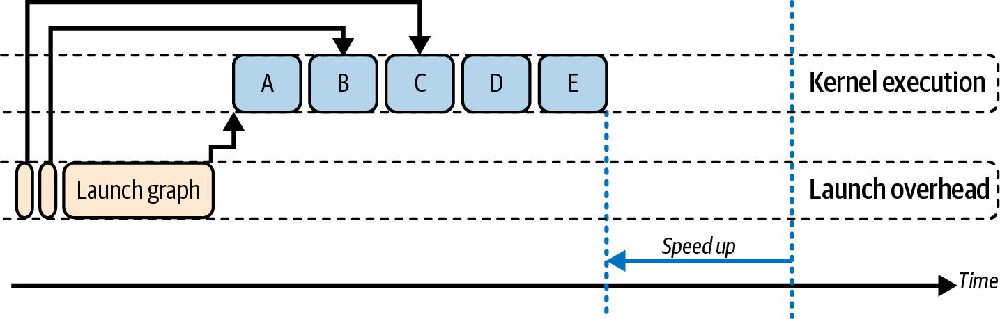
在这个包含两个子内核的简单示例中，主机驱动版本发出三次独立启动（1 个父内核 + 2 个子内核）。CPU 决定何时启动每个子内核时，GPU 会处于空闲状态。
相比之下，设备驱动 DP 版本只在主机端启动一次父内核，随后父内核在 GPU 上生成两个子内核，无需主机进一步干预。表 12-2比较了主机驱动和设备驱动 DP 子内核启动的性能。
| 指标 | 之前（主机启动） | 之后（设备端启动） |
|---|---|---|
| 主机启动总数 | 3 | 1 |
| 每次调用的平均启动开销 | ~20 µs | ~25 µs |
| GPU 空闲周期（序列期间） | ~40% | ~5% |
| 总体执行时间 | 1.00 ms | 0.75 ms |
在这个说明性示例中，将子内核分发移入 GPU 后，DP 消除了约 35% 的空闲时间，并将总运行时间缩短约 25%。每次启动成本略微上升（20 µs → 25 µs），反映了 GPU 设备端调度开销；相对于消除多次 CPU-GPU 握手带来的节省，该开销较小。实际结果取决于硬件和工作负载。
GPU 驱动启动的另一项收益是改善数据局部性，因为阶段之间无需将中间结果拷回 CPU。在本例中，父内核计算的数据无需离开 GPU 内存，就能立即供子内核使用。这避免了额外内存传输，并有助于保留缓存数据。没有 CPU 干预，也意味着本可在 GPU 上复用的数据较少遭遇缓存驱逐或从 DRAM 重新获取。
简而言之，DP 将时停时启的主机驱动工作流转变为连续的 GPU 驻留流水线，有助于保持较高 SM 利用率并减少主机—GPU 协调。请记住，与其他高级技术一样，动态并行的实际影响也必须通过测试确认。
虽然 DP 消除了 CPU 交互，但设备发起的内核启动开销与主机启动仍处于大致相同的数量级。因此，并非所有算法都能获益；有些算法使用 DP 后甚至可能更慢，尤其是被启动内核的工作量太小，无法摊薄启动开销时。换言之，对于某些小内核，设备端启动开销可能抵消 DP 的收益。
从单个 GPU 扩展到多个 GPU 时，核心目标仍然相同：将数据移动隐藏在有用工作之后，让每台设备保持忙碌。主机通过独立 CPU 线程、异步启动或多 GPU graph 将任务分发到各 GPU 后，GPU 接管执行。每台设备的一个 stream 驱动计算时，第二个 stream 可以通过 NVLink 或 PCIe 点对点传输数据，全程无需经过主机内存。
这意味着在大规模环境中，必须将点对点传输与计算重叠。需要注意，即使使用 NVLink，其带宽和延迟也不同于设备内 HBM，因此应通过重叠隐藏通信。
实践中，随着集群规模增长，将工作与数据传输重叠对于接近线性扩展非常重要。对于直接的数据交接，可以使用 GPUDirect Peer Access 在后台移动大块内存：
cudaMemcpyPeerAsync(dest_ptr,dest_gpu,src_ptr,src_gpu,size,comm_stream);
需要集合通信时，例如 PyTorch Distributed Data Parallel（DDP）中的梯度 all-reduce，可以使用 NCCL 异步集合调用，在单独 stream 上启动 NCCL 的非阻塞例程。NCCL 随后将张量组织成 ring 或 tree，以利用 NVLink 和 NVSwitch 路径；与此同时，计算内核继续在自己的 stream 上运行。
如果 MPI 库支持 CUDA-aware 并能识别 GPU 设备指针，它会通过类似下面的调用，自动使用 GPUDirect RDMA 在 InfiniBand 上传输数据：
MPI_Send(device_buf,count,MPI_FLOAT,peer_rank,...);
MPI（以及 NCCL）的 CUDA-aware 能力意味着 GPU 数据可以通过 InfiniBand 上的 GPUDirect RDMA 直接跨网络移动，无需在主机内存中暂存。（节点内部的点对点拷贝则使用 GPUDirect Peer-to-Peer，经 NVLink 或 PCIe 传输。）
使用这些原语并绕过 CPU，有助于降低数据传输延迟，使 GPU 到 GPU 传输接近链路速率。这样，节点间数据传输与通信就能与 GPU 计算适当地重叠。
对于需要高度紧密、事件驱动协调的工作负载（例如动态任务队列和细粒度事件通知），NVIDIA SHMEM（NVSHMEM）是很好的选择。它把每个 GPU 视为分区全局地址空间（PGAS）中的一个处理单元（PE）。
使用 PGAS 后，GPU 可以从设备代码直接写入另一个 GPU 的内存，绕过 CPU。延迟取决于互连；NVLink 通常低于 PCIe 或网络传输。下面是 NVSHMEM 的经典 send-and-signal 模式：
#include<cstdio>#include<cuda_runtime.h>#include<nvshmem.h>#include<nvshmemx.h>// Device symbols for the symmetric buffers__device__int*remote_flag;__device__float*remote_data;//-----------------------------------------------------------------------------// GPU 0: send data then signal GPU 1//-----------------------------------------------------------------------------__global__voidsender_kernel(float*local_data,intdest_pe){intidx=blockIdx.x*blockDim.x+threadIdx.x;floatvalue=local_data[idx];// 1) Put the payload into remote_data[1] on dest_penvshmem_float_p(remote_data+1,value,dest_pe);// 2) Wait for the RMA to complete before setting the flagnvshmem_quiet();// 3) Signal completion by setting remote_flag[0] = 1 on dest_penvshmem_int_p(remote_flag+0,1,dest_pe);}//-----------------------------------------------------------------------------// GPU 1: wait for flag then consume payload//-----------------------------------------------------------------------------__global__voidreceiver_kernel(float*recv_buffer){// 1) Spin until remote_flag[0] == 1nvshmem_int_wait_until(remote_flag+0,NVSHMEM_CMP_EQ,1);// 2) Once flag is set, the payload at remote_data[1] is validfloatval=remote_data[1];recv_buffer[0]=val*2.0f;}//-----------------------------------------------------------------------------// Host-side setup and teardown//-----------------------------------------------------------------------------intmain(intargc,char**argv){// 1) Initialize the NVSHMEM runtimenvshmem_init();// 2) Determine this PE’s rank and bind to the matching GPUintmype=nvshmem_my_pe();cudaSetDevice(mype);// 3) Allocate symmetric buffers on each PE// - Two ints for the flag// - Two floats for the data payloadint*flag_buf=(int*)nvshmem_malloc(2*sizeof(int));float*data_buf=(float*)nvshmem_malloc(2*sizeof(float));// 4) Zero out flags on PE 0 and synchronizenvshmem_barrier_all();if(mype==0){intzeros[2]={0,0};cudaMemcpy(flag_buf,zeros,2*sizeof(int),cudaMemcpyHostToDevice);}nvshmem_barrier_all();// 5) Register the device pointers for use in kernelscudaMemcpyToSymbol(remote_flag,&flag_buf,sizeof(int*));cudaMemcpyToSymbol(remote_data,&data_buf,sizeof(float*));// 6) Launch either the sender or receiver kerneldim3grid(1),block(128);if(mype==0){// Example input buffer for the senderfloat*local_data;cudaMalloc(&local_data,128*sizeof(float));// ... initialize local_data as needed ...sender_kernel<<<grid,block>>>(local_data,1);cudaFree(local_data);}else{float*recv_buffer;cudaMalloc(&recv_buffer,sizeof(float));receiver_kernel<<<grid,block>>>(recv_buffer);cudaFree(recv_buffer);}// 7) Wait for all GPU work to finishcudaDeviceSynchronize();// 8) Clean up NVSHMEM resourcesnvshmem_free(flag_buf);nvshmem_free(data_buf);nvshmem_finalize();return0;}
这里，单边远程内存操作完全发生在设备上。GPU/PE 0 将结果直接写入 GPU/PE 1 的内存，并在该处翻转标志。具体而言，GPU/PE 0 发出 nvshmem_float_p，把 payload 数据直接写入 GPU/PE 1 的内存；调用 nvshmem_quiet() 确保完成，然后使用 nvshmem_int_p 翻转标志。
与此同时，GPU/PE 1 的内核在 nvshmem_int_wait_until() 上轮询；标志一设置就读取 payload。此过程不需要 CPU 干预或额外拷贝，只需通过 NVLink 进行硬件加速的 GPU 到 GPU 传输。
NVSHMEM 通信通过 NVLink 或 PCIe 使用 GPU 发起的单边操作，从而消除主机暂存。因此，NVSHMEM 通信可能接近链路峰值速率。原因是 NVSHMEM 单边操作绕过了 CPU，也避免了额外内核启动的软件开销；本质上，它把原先的多步通信缩减为一次硬件事务。
当然，能力越强，责任也越大。NVSHMEM 本质上是 GPU 级共享内存编程，因此必须谨慎管理同步并避免竞态。此外，过度使用全局屏障会让所有 GPU 等待最慢的 peer。
实践中应避免过度同步；尽可能使用 NVSHMEM 的细粒度 signal 或点对点同步，而不是总调用 nvshmem_barrier_all()。
现代 NVSHMEM 实现提高了这些同步例程的效率，但它们仍是同步点，误用时可能成为瓶颈。当只有部分设备需要协调时，NVSHMEM 提供细粒度原语，例如等待设备变量的 nvshmem_wait_until，以及用于点对点同步的 signal 操作：nvshmem_signal_fetch、nvshmem_signal_wait_until 或 nvshmemx_signal_op 变体。发送 GPU 与接收 GPU 之间使用 NVSHMEM 共享数据并通过 signal 同步的底层细节见图 12-14。
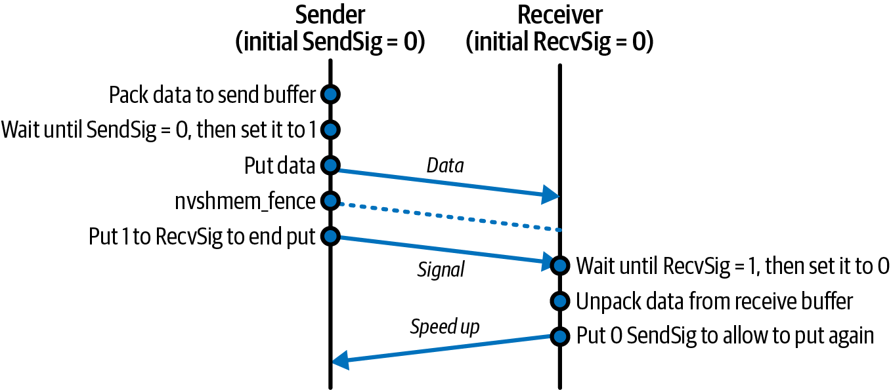
当工作负载不规则或依赖数据时，例如图算法、动态负载均衡和离散事件模拟，NVSHMEM 尤具优势。在这些情况下，静态 graph 和集合操作并不足够。
使用 NVSHMEM 的内核可以像其他内核一样被捕获进 CUDA Graph。NVSHMEM 设备操作发生在这些内核内部，不是独立 graph 节点。不过，NVSHMEM 的真正优势在于让内核即时适应并协调，而无需 graph 使用固定通信脚本。
简而言之，NVSHMEM 将 GPU 集群转变为共享内存域，使内核启动、数据传输和同步能够完全在设备端完成；相较 CPU 介导的方式，它通常能获得更低延迟和更高吞吐。
设想一个两阶段 Transformer 推理流水线（attention + 多层感知机）：GPU 0 计算 attention，然后通过 NVSHMEM 将激活值 put 到 GPU 1 并发送 signal；GPU 1 上运行的持久内核看到标志后，开始 MLP 阶段。
GPU 1 仍处理 batch 1 时，GPU 0 可以立即继续 batch 2。经过几次迭代后，两台设备形成流水化协作，每次交接都隐藏在活跃计算 warp 之后。这有望获得较高利用率且不引入主机停顿，但实际效果取决于负载平衡、互连和同步开销。
需要灵活负载均衡时，NVSHMEM 的原子操作允许每个 PE 动态获取工作。PE 是参与并行 NVSHMEM 应用程序的一个操作系统进程。
以下代码展示每个 GPU 从全局计数器获取下一个索引、处理相应 chunk，然后循环。这实现了完全位于设备端的真正 work stealing，无需主机协调：
__global__voidwork_steal_kernel(/*...*/,int*queue_head,Task*tasks){while(true){// Atomically claim the next task indexintidx=nvshmem_int_atomic_inc(queue_head);if(idx>=N_tasks)break;// Process tasks[idx]...}}
对于要求尽可能低抖动的场景，例如紧密的多 GPU 集合操作或同步模型并行步骤，可以使用 NVSHMEM 启动跨所有 GPU 的协作式内核：通过 nvshmemx_collective_launch() 同时在 GPU 0 和 GPU 1 上启动发送端与接收端内核。这样，它们就能借助 NVSHMEM 协调，无需主机干预。随后可以使用 NVSHMEM 的设备端屏障：
__global__voidsynchronized_step_kernel(/*...*/){nvshmem_barrier_all();// All GPUs proceed in lockstep here// ...}
这里，每个 PE 一同进入 nvshmem_barrier_all()，然后同时继续执行。这保证集群范围内对齐的执行。
所有使用 NVSHMEM 设备级同步或集合操作的内核，都必须通过 nvshmemx_collective_launch() 启动，以确保内核在作业的所有 PE（GPU）上并发运行。
需要 broadcast、reduce 和 all-to-all 等批量集合操作时，NVIDIA NCCL 是多 GPU 系统的常用库。传统方式由每个 GPU 从主机启动 ncclAllReduce 或类似集合操作，然后等待（同步），再进入下一计算阶段。这种顺序式主机编排会在前向与反向传播之间增加开销和空闲时间。
不过，NCCL 调用也可以像内核一样记录到 CUDA Graph 中。这样就能把前向内核、all-reduce 和反向内核“固化”进单个 graph，并在每次迭代中重放：
cudaStreamBeginCapture(captureStream,cudaStreamCaptureModeGlobal);forwardKernel<<<...>>>(...);ncclAllReduce(sendBuf,recvBuf,count,ncclFloat,ncclSum,comm,captureStream);backwardKernel<<<...>>>(...);cudaStreamEndCapture(captureStream,&graph);// Instantiate and upload before launchingcudaGraphExec_tgraphExec;cudaGraphInstantiate(&graphExec,graph,...);cudaGraphUpload(graphExec,captureStream);// Each training step:cudaGraphLaunch(graphExec,captureStream);
注意，所有操作（包括 NCCL）都使用同一个捕获 stream。使用 graph 后，NCCL 调用会像内核一样成为 graph 节点。由于每个进程都重放相同 graph，NCCL 内部逻辑可以找到 peer 并执行 all-reduce，无需额外主机协调。在大型集群上，捕获进 graph 的 all-reduce 可以消除每次迭代的启动抖动，并有助于让所有 GPU 重叠计算与网络操作。
由于每个 GPU 都启动包含集合节点的相同 graph，NCCL 可以在内部跨 rank 会合，无需额外主机干预。主机每次迭代的工作缩减为一次 cudaGraphLaunch，从而降低 CPU 开销和启动抖动。
除了降低 CPU 负载，将 all-reduce 捕获进 graph 还能在多个 GPU 和计算节点之间重叠通信与计算。假设把梯度计算分为两遍：第 1 层到 L/2，以及第（L/2 + 1）层到第 L 层，并将它们映射到不同 stream：
// Pseudocode in capture:computeGradientsLayer1<<<...>>>(...,streamA);ncclAllReduce(...,comm,streamB);// in streamB, overlaps with streamAcomputeGradientsLayer2<<<...>>>(...,streamA);ncclAllReduce(...,comm,streamB);
由于这些节点连同各自的 stream 分配和依赖一起被捕获，CUDA 驱动可以将 streamB 上的 NCCL 网络传输与 streamA 上的独立工作重叠。这种分桶 all-reduce 模式能够把通信延迟隐藏在计算之后，从而改善多 GPU 扩展。
当所有 rank 使用同一 communicator 捕获并重放相同序列时，NCCL 集合操作与 graph 捕获兼容。所有 rank 必须用同一 communicator 捕获和重放相同 NCCL 序列；graph 重放之间 communicator 不匹配会带来死锁或错误结果的风险，最坏情况下可能静默失败且难以调试。建议预先运行集合操作进行 warm-up、初始化 communicator，并复用实例化 graph，以降低稳态延迟。
实践中，分桶 all-reduce 是大模型训练中的常见方法。将梯度归约 chunk 与后续层计算重叠，可以隐藏大部分网络时间。DDP 在不同进程（进程 1 和进程 2）中运行分桶 all-reduce 的示例见图 12-15。
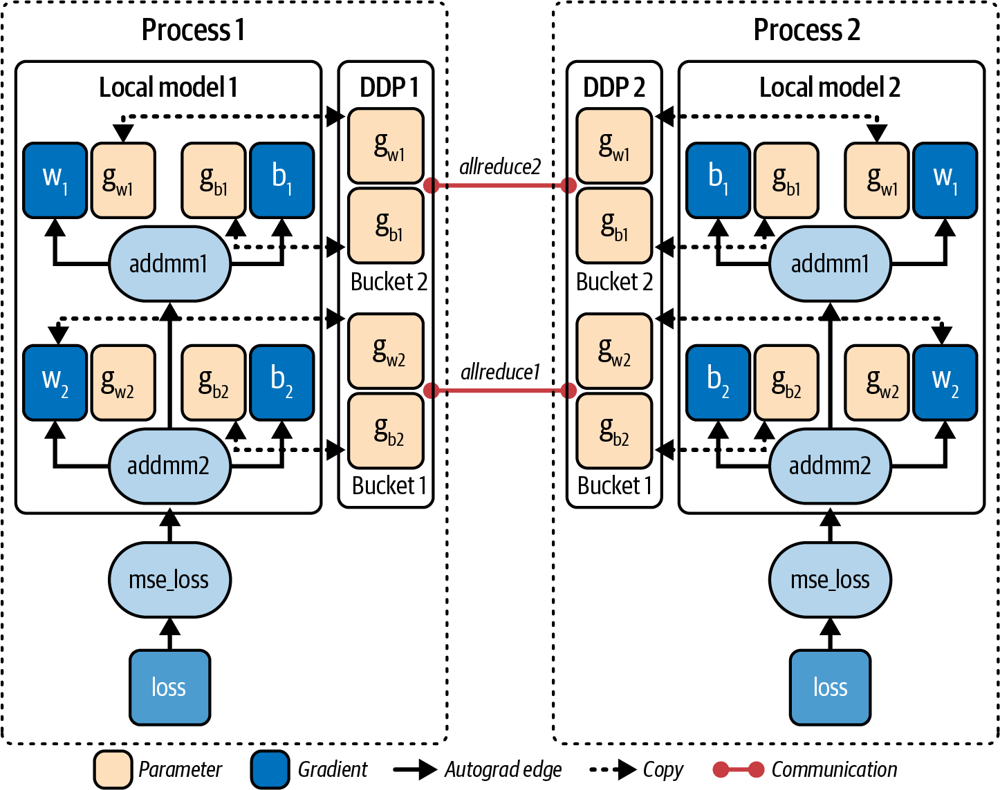
PyTorch DDP 等现代库会自动实现这种方法的变体，而捕获 CUDA Graph 还能进一步降低 CPU 开销，并提供更确定的性能表现。
在多 GPU 环境中使用 CUDA Graph 时需要注意：所有参与 GPU 必须按完全相同的顺序记录并重放集合操作，以避免死锁；这类似 MPI 的集合规则，所有 rank 都必须按相同顺序进入集合操作。
此外，CUDA Graph 会固定并复用 GPU 缓冲区，因此应在捕获前完成梯度和通信缓冲区的分配。如前所述，如果需要修改 batch 大小等 graph 参数，可以使用 cudaGraphExecUpdate 修补参数，无需完整重新捕获。
实践中，将 NCCL 和计算一起捕获进 graph，可以减少每一步的 CPU 时间，并加速多 GPU 大模型训练。在超大规模环境中，这些节省会不断累积，有助于改善整个集群的同步和利用率；实际收益取决于拓扑、通信计算比和软件配置。
无论使用简单点对点拷贝、NCCL ring，还是 NVSHMEM 单边原子操作，扩展到许多 GPU 的模式都相同：系统应尽量一次分发内核，将数据传输流水化并与计算重叠，同时把主机 CPU 移出关键路径，以争取接近线性扩展。
理想情况下，4 个 GPU 应表现得像速度提高 4 倍的单个 GPU，前提是能并行向所有 GPU 持续供给数据（见图 12-16），并让主机退出循环。充分重叠通信和计算后，可能获得接近线性的加速；如果没有重叠，当通信时间达到计算时间时，扩展效果就会趋于平台期。
随着 GPU 数量增加，需要更积极地将数据传输和计算流水化，并减少 CPU 端编排和同步。因此，应使用异步拷贝、graph 中的 NCCL 集合操作和 NVSHMEM PGAS 原语，将更多编排卸载到设备端；这也会把更多责任转移给软件。
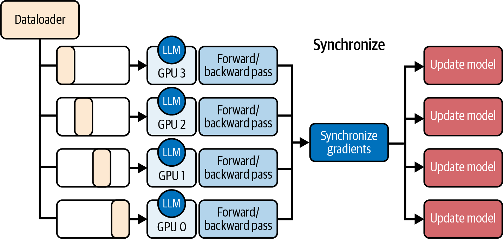
应用这些技术，可消除 CPU 瓶颈、饱和高速互连、充分利用计算 FLOPS，并构建真正低延迟的多 GPU 流水线。接下来，在动态和设备端调度与编排的语境下重新审视屋顶线模型。
过去几章已经积累了一组可靠的编排技术，包括 CUDA stream、内核融合、持久内核、CUDA Graph 和动态并行等。roofline 模型有助于判断哪种工具最可能在当前场景中带来最大收益。
roofline 的核心是运算强度，即执行的 FLOPS 与移动字节数之比。它包含两个硬件“上限”：倾斜的内存 roof 表示受带宽限制时的峰值吞吐；平坦的计算 roof 表示受 ALU 限制时的峰值运算速率，如图 12-17所示。
如果内核接近内存 roof（例如 FLOPS/byte 较低），因而受内存限制，最佳优化通常是隐藏内存传输或将其与计算重叠。这意味着应结合 CUDA stream 使用异步拷贝，甚至并发运行多个内存受限内核，以更充分利用内存系统的不同部分。
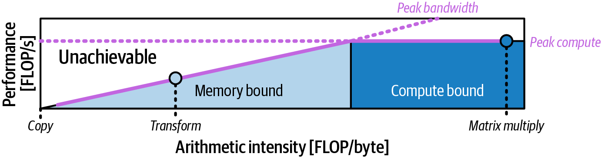
相比之下，位于计算屋檐下的高强度内核需要让 ALU 始终保持繁忙。此时内核融合大有用武之地：把分开的加法和缩放操作（前文的融合示例）合并为一次遍历，提高每字节 FLOPS，使 roofline 图上的点向右移动，并让内核性能更接近峰值 FLOP/s 的更高比例。
同样，持久化内核、线程块集群和设备发起的 CUDA Graph 不会改变运算强度数值，但能减少重复启动造成的空闲间隙，从而让内核性能更接近平坦的计算上限。
许多实际工作负载处于两者之间，既不是明显的内存受限，也不是计算受限。此时并发是关键。可以通过 stream、并发 graph 或多个持久化内核并行启动若干中等强度内核，将它们组合起来，使聚合吞吐量的点在两个坐标轴上都更高，从而更充分地利用设备资源。
完整的 roofline 分析需要有纪律的测量。使用 Nsight Compute 统计 FLOPS 和传输字节数，标出内核的数据点，并观察它距离两条 roofline 各有多远。
如果工作负载受内存限制，应考虑使用 stream 和重叠，并在适当时降低精度（FP16、FP8、FP4），以减小算术强度公式的分母（例如传输的字节数）。
如果内核受计算限制，却因启动开销或空闲时段未达到峰值 FLOPS，应重点降低启动开销。正如前文所述，可以将操作融合到一个内核中、使用持久化内核、捕获 CUDA Graph，或执行设备端启动，从而持续为 ALU 提供工作。
如果内核明显低于两条 roofline，既不完全受内存限制也不完全受计算限制，可以尝试提高并发度，让多个内核和 stream 并行运行，以更充分地利用系统资源。
借助这种定量指导，你可以为内核选择合适的编排策略，而不必一次尝试所有技巧。仍要验证每项优化是否让性能更接近硬件的实际潜力；应用优化后务必重新测量。
roofline 模型可以指导预期，但只有真实的性能测量（包括计算吞吐量、实际 occupancy、内存吞吐量等）才能说明完整情况。将 roofline 分析与迭代式、持续性的分析器采样结合起来，才能确认所选优化策略确实有效。
要实现 GPU 的高性能，关键是以尽可能低的开销协调计算和数据移动。高效的编排能简化跨 CPU 与 GPU 的复杂工作负载，避免任何一方等待另一方。本章要点如下：
现代 GPU 上的 L2 缓存原子操作速度极快。结合批量递增，用快速的 L2 缓存原子操作在 GPU 上平衡不规则工作负载。批量分配工作可以减少竞争，消除 warp 空闲间隙并保持 warp 忙碌。在极端不均衡情况下，吞吐量最高可能提升约 2 倍，但通常提升约 10%–30%；由于 L2 带宽很高，即使批量大小只有 8 或 16，也能消除大部分竞争。
将一系列 GPU 操作记录一次，然后每次迭代只需一次主机调用即可重放。这可以降低每次迭代的 CPU 调度开销，延迟常可降低 20%–30%（更大规模下可能更多）。同时要确认 GPU 上存在依赖关系的操作实现了尽可能大的重叠。
将异步拷贝、内核启动、事件记录和内存分配组成的序列捕获到 CUDA Graph 中（cudaStreamBeginCapture/cudaStreamEndCapture）。使用 cudaGraphLaunch 重放 graph，可以消除每次调用的 CPU 入队开销，同时保留所有 stream 间依赖，进一步减少运行时瓶颈。
通过尾部启动预先记录的 CUDA Graph，或使用动态并行生成子内核，从 GPU 自身启动工作。这可以消除 CPU 调度间隙，并让 GPU 在无需主机干预的情况下从头到尾保持忙碌。
始终尝试将通信与计算重叠。使用独立 stream，对 GPU 点对点传输（cudaMemcpyPeerAsync）、NCCL 集合通信、支持 CUDA 的 MPI（RDMA）或 NVSHMEM 单边操作进行流水线化。在计算与通信比合适且重叠充分时，这可以用有用工作隐藏通信延迟，使多 GPU 甚至跨集群节点的扩展接近线性；实际效果仍取决于拓扑、同步和负载平衡。
让 roofline 图指导策略。如果内核受内存限制，应通过异步 memcpy 和 FP8/FP4 等混合精度来重叠操作并减少数据移动。如果内核受计算限制但因开销而未达到理想水平，应使用内核融合、持久化内核和 CUDA Graph 等降低启动开销的技术，逐步接近计算上限。对于处于中间区域的内核，应并行运行多个操作以提高并发度、利用所有硬件单元。务必通过分析器验证所选优化确实带来改善。
将这些技术结合起来——动态分派、协作式内核、graph 捕获/重放以及 GPU 原生内存共享——就能构建充分利用 GPU 集群各个部分的超大规模 AI 工作负载流水线。
本章超越了单个内核的优化，探讨了端到端的编排技术。我们介绍了如何使用动态并行完全在设备上启动工作、在 CUDA Graph 中捕获复杂工作流，以及使用 NCCL 和 NVSHMEM 协调多个 GPU。每项技术的目标都相同：持续为每个执行引擎提供工作、隐藏延迟并缩小主机与设备之间的间隙，让硬件尽可能持续运行。
NVIDIA 的现代 GPU 平台比以往任何时候都更模糊 CPU 与 GPU 的界线。例如，Grace Blackwell 和 Vera Rubin Superchip 通过具备一致性的高带宽 NVLink，将 CPU 与多个 GPU 连接起来。
即使硬件正在减少 CPU 与 GPU 之间的障碍，仍需要软件充分发挥这些高性能硬件的能力。本章介绍的方法——无论是 C++ 中的 CUDA，还是更高层的库 API——都是利用这些进步的途径。
下一章将介绍 PyTorch 如何整合其中许多思想，包括 stream、graph、异步操作和优化内核，使你只用几行 Python 就能获得这种性能。接下来我们将深入 PyTorch 生态，理解它为何如此适合实现高性能 AI 工作负载。